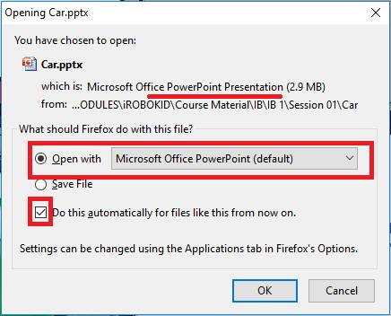
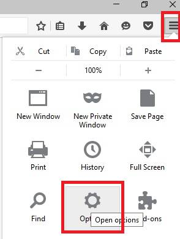
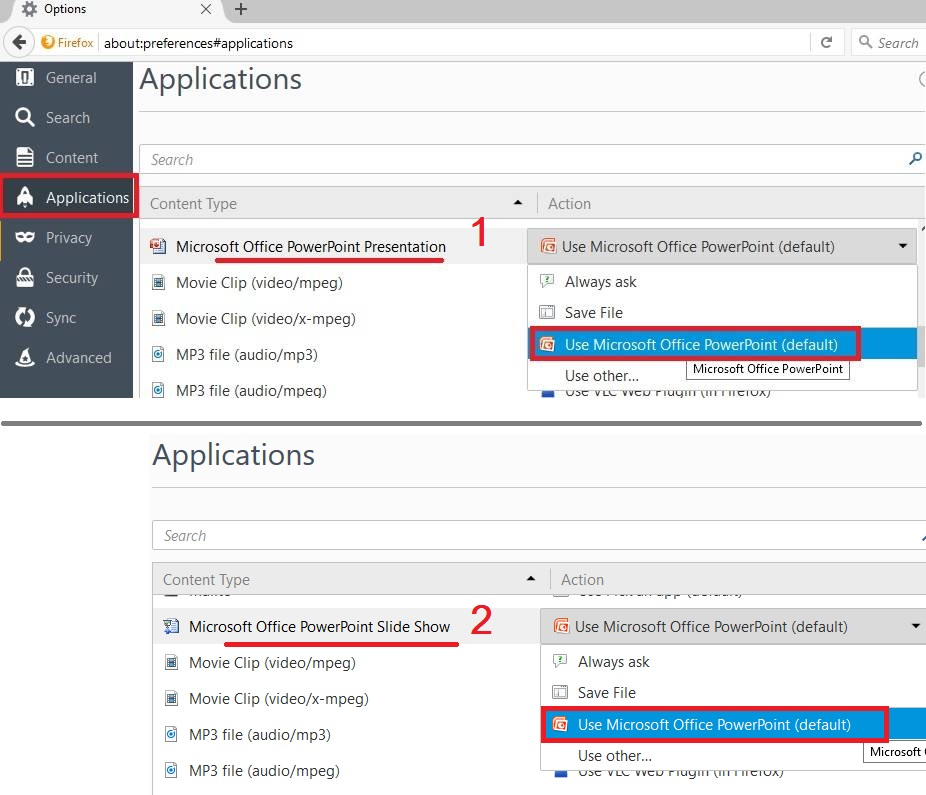
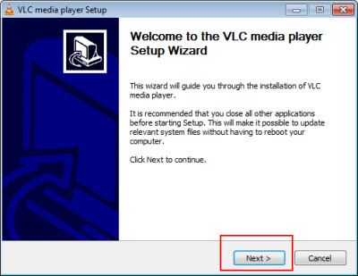
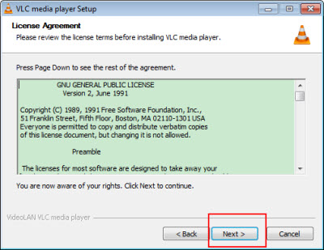
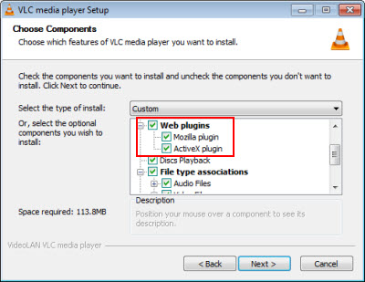
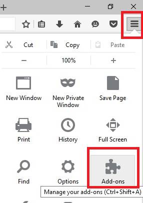
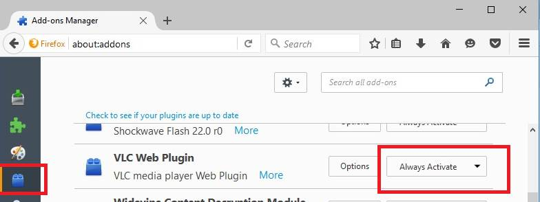

2. Action for opening Presentation: Microsoft PowerPoint.
3. Running the Videos: VLC Web Plug-in.
In order to be able to view presentations without recurring downloads, the module is run in Firefox, as the default browser.
(Note: Chrome will download the presentation file every time the 'Presentation' button is clicked, even though the presentation file is there on the computer only.
It will NOT open the file. Hence, use Firefox only.)
If Firefox is not already installed, download it from the Mozzila website. (https://www.mozilla.org).
Note : the installation will require internet connection.
Usually when a type of file that can't be opened in the Firefox browser is opened, it will automatically prompt for the action to take as follows.
(If this does not happen, see the next step)
For the presentations, select 'Open with' and Microsoft PowerPoint if it does not appear automatically, click the 'Browse' button and tick the checkbox below.

In case, the file is automatically downloaded, instead of asking, do the following:
1. Click the menu button on the top-right corner and choose Options.

2. Select the Applications panel.
Select the type of file for which you want, in this case Microsoft PowerPoint Presentation, to change the default action- Use Microsoft PowerPoint (default).
AND Microsoft PowerPoint Slideshow, to change the default action- Use Microsoft PowerPoint (default).

If you do not see Microsoft PowerPoint, select 'Use other…'.Then search for Microsoft PowerPoint.
If you still can't, make sure you have Microsoft PowerPoint installed on your system.
Close the about:preferences tab. Any changes you've made will automatically be saved.
You need to run the videos in VLC Web plugin, in the browser.
Steps to install web plug-in:
1. Run the given vlc-2.2.4-win32.exe installer file. (CHECK YOUR DOWNLOAD FOLDER FOR THIS FILE, ONCE YOU SAVE IT)
(The version provided is: Version 2.2.4 • Windows • 28 MB
Windows requirements : all versions of Windows, from Windows XP SP3 to the last version of Windows 10)
OR
Download the latest version of VLC Player from the VLC website. (https://www.videolan.org)
After the download completes, click the installer to view VLC setup wizard;


2. Install VLC after checking (tick) all of the extensions and plugins;

Check Mozilla plug-in here to enable VLC plug-in for Mozilla products like Firefox, check Active plugin to enable VLC to be embedded in other web browsers and third-party applications.
3. Click the menu button and choose Addons.

4. In the Plugins, "VLC Web Plug-in" will appear. Click and select "Always Activate".
